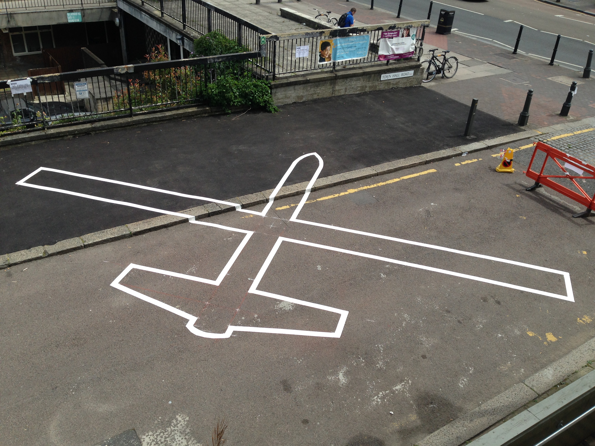

STEALTH at Vivid Projects

STEALTH exhibition opening tonight at Vivid Projects, 6.30-8.30PM Curated by Antonio Roberts, Associate Producer for Vivid Projects STEALTH presents recent work by UK and international artists critiquing surveillance culture and the invasive and pervasive technologies that shape our daily interactions. Utilising a variety of media including installations, video, social media and software, the exhibition explores how technology … [Read more…]